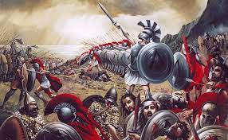
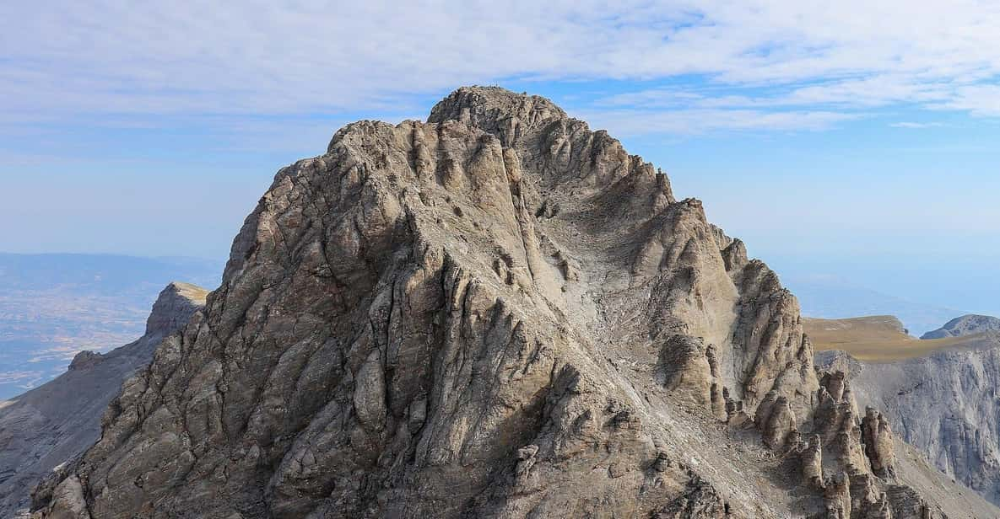
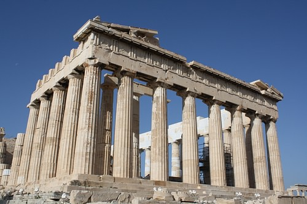
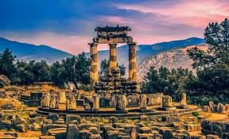
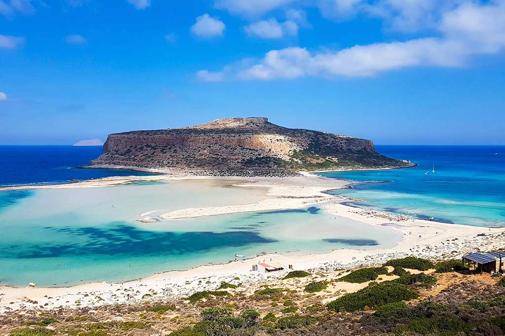
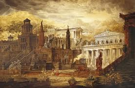
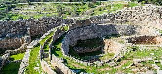
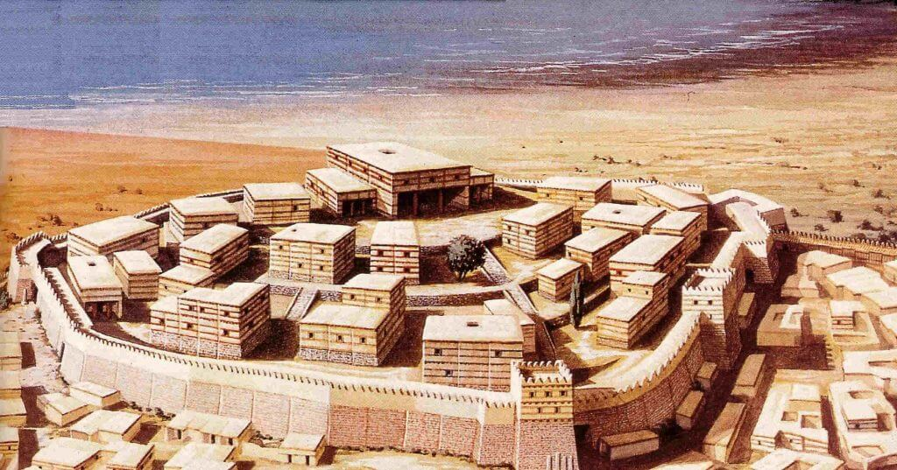
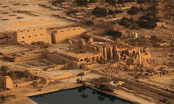
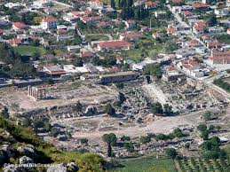

Lugares Emblemáticos de la Mitología Griega
Paso de las Termópilas
El Paso de las Termópilas es uno de los sitios más conocidos de la mitología y la historia griega. Aquí tuvo lugar la famosa batalla de las Termópilas, donde el rey Leónidas y sus 300 espartanos resistieron valientemente contra las fuerzas persas de Jerjes I.
Monte Olimpo
El Monte Olimpo es la legendaria morada de los dioses griegos, encabezados por Zeus. Se creía que este imponente monte, el más alto de Grecia, era el hogar celestial donde los dioses gobernaban el mundo.
Atenas
Atenas, la ciudad dedicada a la diosa Atenea, es uno de los lugares más emblemáticos de la mitología griega. Conocida por su acrópolis y templos, como el Partenón, fue el centro de la cultura, la filosofía y la religión en la antigua Grecia.
Delfos
Delfos es el sitio del famoso Oráculo de Delfos, donde los antiguos griegos consultaban a los dioses para obtener profecías. Estaba dedicado a Apolo y era considerado el ombligo del mundo.
Isla de Creta
Creta es el lugar donde se originó la leyenda del Minotauro, un monstruo con cuerpo de hombre y cabeza de toro, que habitaba en el laberinto construido por Dédalo bajo el palacio del rey Minos en Cnosos.
Esparta
Esparta fue una de las ciudades-estado más poderosas de la antigua Grecia, conocida por sus guerreros disciplinados y su cultura militar. Es famosa por sus héroes, como el rey Leónidas y la batalla de las Termópilas.
Micenas
Micenas, la ciudad del rey Agamenón, es un sitio mítico en la historia griega. Aquí comienza la leyenda de la guerra de Troya, liderada por Agamenón para recuperar a Helena.
Troya
Troya es el sitio de la famosa guerra descrita en la Ilíada de Homero. Fue sitiada por los griegos durante diez años en su intento por recuperar a Helena, la esposa de Menelao.
Tebas
Tebas es el hogar de héroes como Edipo y Cadmo. Esta ciudad fue escenario de numerosos mitos y tragedias griegas, como la historia de Edipo y la lucha entre sus hijos por el trono.
Corinto
Corinto fue una ciudad importante tanto en la mitología como en la historia de Grecia. Aquí se originan los mitos de Sísifo, el astuto rey condenado a empujar una roca montaña arriba por la eternidad.
